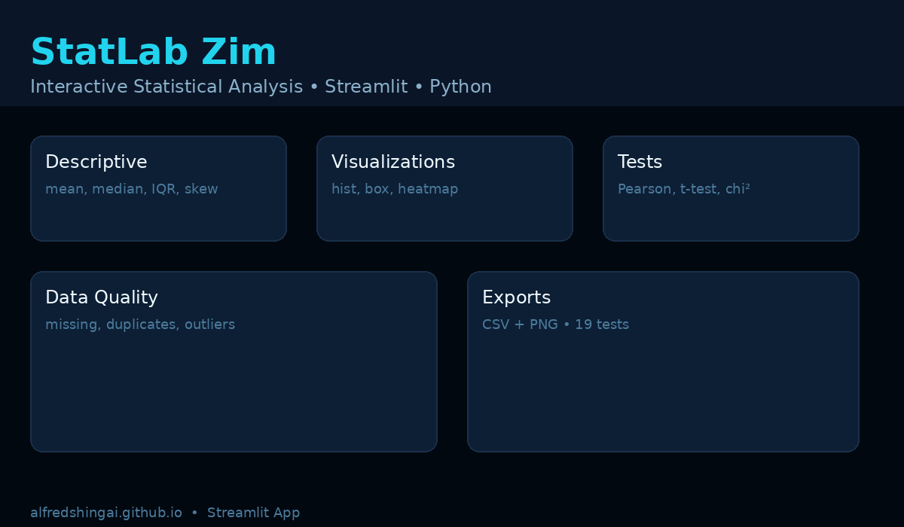

Featured · Data Science · Web Development · Tools
StatLab Zim — Interactive Statistical Analysis
Problem: Introductory statistics tools are often closed, complex, or lecture-only. Solution: A browser app where you upload any CSV and get data-quality checks, 13-metric descriptive summaries, 6 interactive Plotly charts, and 5 hypothesis tests with plain-language interpretations — plus CSV/PNG exports.
StreamlitPythonPandasSciPyPlotlyPytest